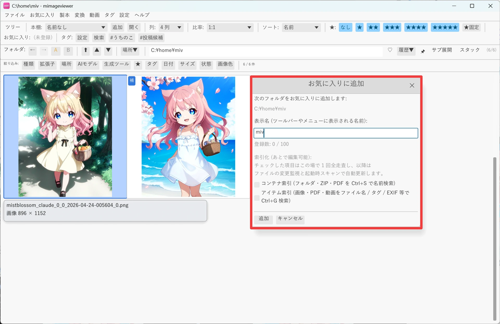
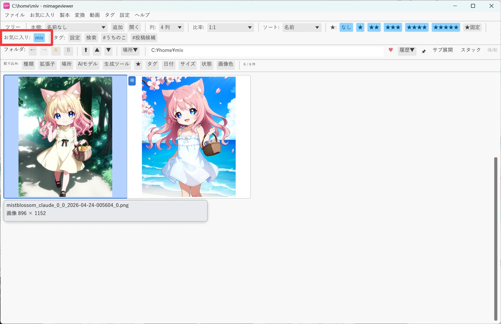
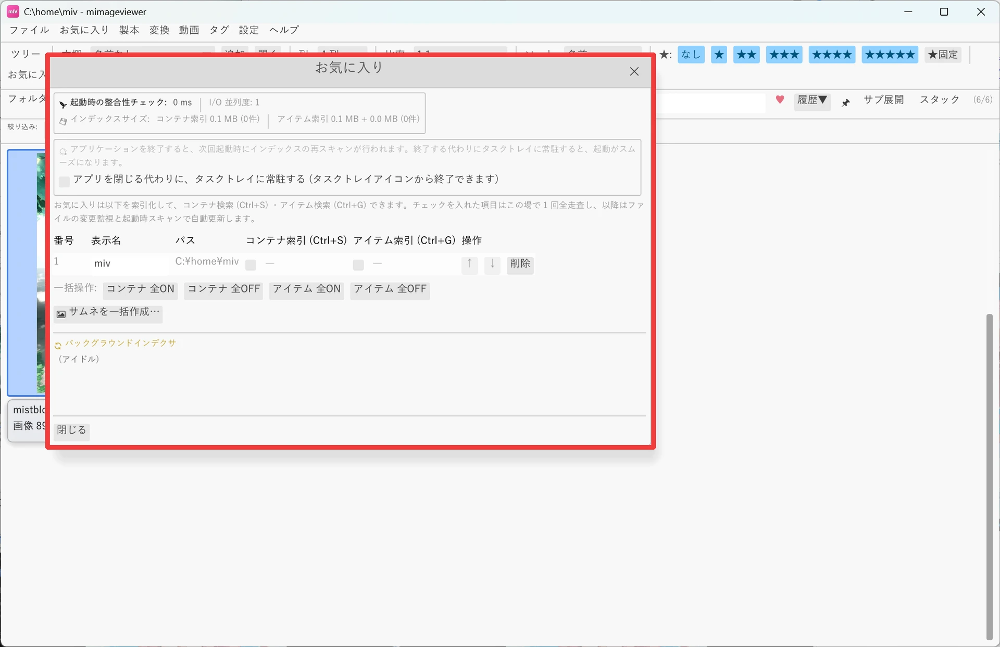

お気に入りで素早くアクセス
よく使うフォルダをお気に入りに登録しておくと、メニューやツールバーからワンクリックで開けるようになります。 並べ替えて整理できるほか、登録した場所をまとめて横断検索することもできます。
フォルダをお気に入りに登録する
登録したいフォルダを開いた状態で、メニュー「お気に入り」→「このフォルダを追加…」を選び、 表示名を付けて登録します。登録できるのは実フォルダだけです（ZIP / PDF ファイル自体を お気に入りとして直接登録することはできません。ただし、お気に入りフォルダの中にある ZIP / PDF は、後述の横断検索で見つけられるようになります）。
- 登録できるお気に入りは最大 100 件です。
- 操作カスタマイズで番号から直接開けるお気に入り枠は 1〜20 です。

登録したお気に入りを開く
登録済みのフォルダは、次のいずれかから素早く開けます。
- メニュー「お気に入り」の一覧から選ぶ
- ツールバーの「お気に入り:」セクションから選ぶ
- フォルダバーの ♡ / ♥ ボタン（♡ は未登録、♥ は登録済みを表し、クリックで現在のフォルダの登録・解除を切り替えられます）

並べ替え・編集する
メニュー「お気に入り」→「編集」でお気に入りダイアログを開くと、登録したフォルダの並び替え・削除・ 索引管理（後述のコンテナ索引 / アイテム索引の ON・OFF）・画像補正の 「標準設定を分ける」をまとめて行えます。番号列は、 操作カスタマイズでお気に入り 1〜20 を開く操作を割り当てるときの順番に対応します。

お気に入り全体を横断検索する
登録したお気に入りをまたいで、フォルダ・ZIP・PDF や画像・動画・音声を名前やメタ情報で 横断検索できます。音声はファイル名だけが検索対象です。用途に応じて 2 つのキーを使い分けます。
| キー | 検索対象 | 用途 |
|---|---|---|
| Ctrl+S | フォルダ / ZIP / PDF を フォルダ名・ファイル名で（コンテナ検索） | 「あのフォルダ・本、どこに置いたっけ？」を名前で呼び出す |
| Ctrl+G | 画像 / PDF / 動画を メタ情報（タイトル・AI プロンプト等）やファイル名で、音声をファイル名だけで（アイテム検索） | プロンプトやタイトルから「昔見たあの画像」を掘り出す |
大量のファイルに索引を張るときの注意
索引は、mImageViewer が起動している間だけファイルの変更を追い続けます。アプリを完全に終了すると 追跡も止まるため、次に起動したときに変更点を確認し直して最新の状態に追いつきます。索引の対象が 非常に多い（数万ファイル規模など）と、この起動直後の再スキャンに時間がかかることがあります。